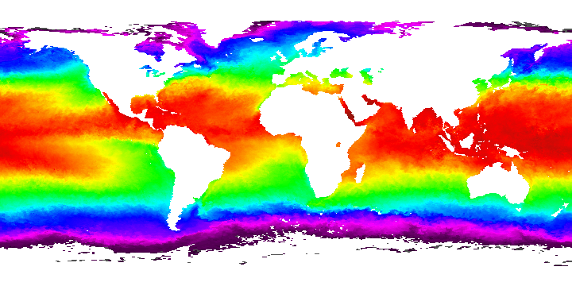
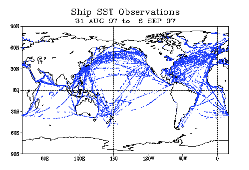
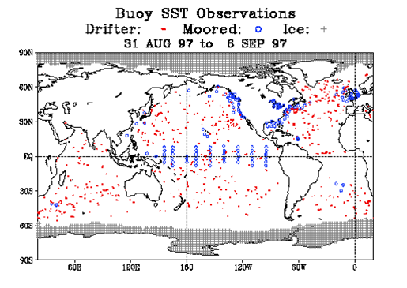
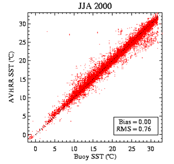
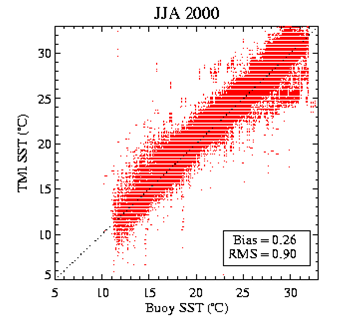
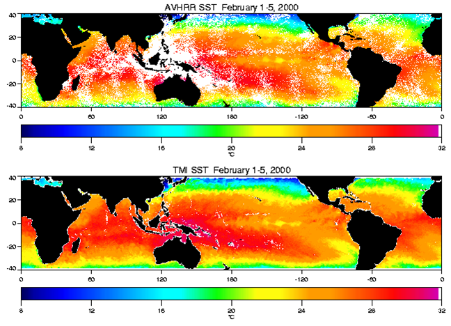
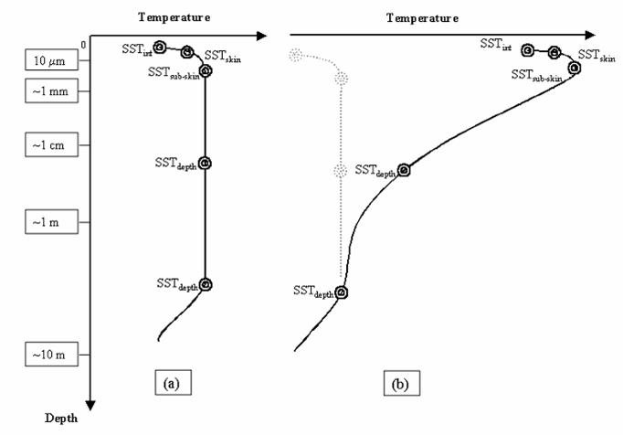

Infrared and microwave remote sensing of sea surface temperature (SST)
 AVHRR Sea Surface Temperature, October 2001 (NASA/JPL PO.DAAC) |
John Maurer {% include address.ssi %} This paper is an overview of a seminar given by Dr. Gary A. Wick, of NOAA Earth System Research Laboratory (ESRL), on October 9, 2002 for a graduate course at the University of Colorado at Boulder ("Remote Sensing Seminar") led by Prof. William J. Emery in the Department of Aerospace Engineering Sciences. Many of the images in this presentation are pulled directly from Dr. Wick's PowerPoint presentation. October, 2002 |
Introduction • Thermal infrared • Passive microwave • How SST is derived • Different depths of SST • Blending SSTs • References
Sea surface temperature (SST) is an important geophysical parameter, providing the boundary condition used in the estimation of heat flux at the air-sea interface. On the global scale this is important for climate modeling, study of the earth's heat balance, and insight into atmospheric and oceanic circulation patterns and anomalies (such as El Niño). On a more local scale, SST can be used operationally to assess eddies, fronts and upwellings for marine navigation and to track biological productivity.
Satellite technology has improved upon our ability to measure SST by allowing frequent and global coverage. In the past, SST could only be measured by ships and buoys, whose ranges were limited. Below are two maps illustrating this point:
 |
 |
Methods for determining SST from satellite remote sensing include thermal infrared and passive microwave radiometry. Both methods have their own strengths and weaknesses, which are outlined below. Gary Wick's current research investigates techniques for combining the strengths of both of these methods into a blended SST product which will hopefully improve upon existing SST measurements. Climatologists have stated the need for accuracy on the order of 0.3 Kelvin (World Climate Research Program, 1985) while the best accuracy possible today is only on the order of ~0.6 Kelvin.
2. THERMAL INFRARED SST MEASUREMENTS
Thermal infrared SST measurements have a long heritage (~20 years). They are derived from radiometric observations at wavelengths of ~3.7 µm and/or near 10 µm. Though the 3.7 µm channel is more sensitive to SST, it is primarily used only for night-time measurements because of relatively strong reflection of solar irradiation in this wavelength region, which contaminates the retrieved radiation. Both bands are sensitive to the presence of clouds and scattering by aerosols and atmospheric water vapor. For this reason, thermal infrared measurements of SST first require atmospheric correction of the retrieved signal and can only be made for cloud-free pixels. Thus, maps of SST compiled from thermal infrared measurements are often weekly or monthly composites which allow enough time to capture cloud-free pixels over a region. Thermal infrared instruments that have been used for deriving SST include Advanced Very High Resolution Radiometer (AVHRR) on NOAA Polar-orbiting Operational Environmental Satellites (POES), Along-Track Scanning Radiometer (ATSR) aboard the European Remote Sensing Satellite (ERS-2), the Geostationary Operational Environmental Satellite (GOES) Imager, and Moderate Resolution Imaging Spectroradiometer (MODIS) aboard NASA Earth Observing System (EOS) Terra and Aqua satellites.
 |
|
 |
|
3. PASSIVE MICROWAVE SST MEASUREMENTS
Due to lower signal strength of the Earth's Planck radiation curve in the microwave region, accuracy and resolution is poorer for SST derived from passive microwave measurements compared to SST derived from thermal infrared measurements. A comparison of the accuracy of passive microwave versus thermal infrared SST measurements is shown in Dr. Wick's plots below, where the AVHRR instrument shows a root mean square (RMS) error of 0.76 while that of the TMI passive microwave instrument is 0.90:
 |
 |
However, the advantage gained with passive microwave is that radiation at these longer wavelengths is largely unaffected by clouds and generally easier to correct for atmospheric effects. This is well illustrated in the two SST images below (NASA JPL/PO.DAAC). Though the two images cover the same time period, the thermal infrared composite (AVHRR) has lots of white patches where cloud-free pixels could not be obtained over such a short period of time:

Phenomena which do effect passive microwave signal return, however, are wind-generated roughness at the ocean's surface and precipitation. These can usually be corrected for, however, using multiple frequencies. SST measurements are primarily made at a channel near 7 GHz with a water vapor correction enabled by observation at 21 GHz. Other frequencies used for correction of surface roughness (including foam), precipitation, and what little effect clouds do have on microwave radiation are 11, 18, and 37 GHz. Passive microwave instruments that have been used for deriving SST include the Scanning Multichannel Microwave Radiometer (SMMR) carried on Nimbus-7 and Seasat satellites, the Tropical Rainfall Measuring Mission (TRMM) Microwave Imager (TMI) , and upcoming data from the Advanced Microwave Scanning Radiometer (AMSR) instrument on the NASA EOS Aqua satellite and on the Japanese Advanced Earth Observing Satellite (ADEOS II).
|
|
|
|
Radiation emitted by a surface is the Planck emission times the surface emissivity. Since the Planck function is dependent on temperature and is well known, sea surface temperature can be estimated if the surface emissivity can be sufficiently estimated using models or regression techniques that employ independent in situ measurements (Njoku and Brown, 1993). Subsequent to atmospheric corrections, then, coefficients are applied to the retrieved brightness temperature signals in the derivation of SST which factor in estimations of the surface emissivity. Simple linear algorithms provide reasonably accurate SST calculations under favorable atmospheric and surface conditions, but more sophisticated higher-order computations may be required otherwise.
5. DIFFERENT DEPTHS OF SST: AN IMPORTANT CONSIDERATION
Because of temperature gradients below the ocean's surface, the depth at which measurements are made will significantly impact the SST. Measurements made at only a depth of one or two molecules below the ocean's surface are considered the "interface SST" and cannot be realistically measured. Just below this, however, at a depth of roughly 10 µm is what is known as the "skin SST". The attenuation length of thermal infrared radiation corresponds to this depth. The "sub-skin SST" is at a depth of ~1 mm and corresponds to the attenuation length of microwave radiation. Beyond this depth is what is commonly referred to as the "bulk SST", "near-surface SST", or "SSTdepth". Below is an illustration of these different depths of SST, showing two different temperature gradients:

As can be discerned from the illustration above, the bulk SST (or SSTdepth) may vary greatly from the skin and sub-skin SSTs depending on the temperature gradient. The skin temperature may also vary from the sub-skin temperature for the same reason. Diurnal heating will cause these differences to be greatest during the afternoon and least right before dawn. Since SST measurements made from buoys and ships are usually bulk temperature measurements, temperature gradients must be taken into consideration when comparing them to SST measurements made by either thermal infrared or passive microwave remote sensing observations.
Since thermal infrared instruments measure the skin temperature and passive microwave instruments measure the sub-skin temperature, furthermore, one must also consider differences due to evaporative cooling at the sea surface when comparing measurements derived from these methods. The difference can be as great as 1 Kelvin in combination with diurnal heating effects, and so both properties must be properly accounted for when comparing or blending thermal infrared and microwave products.
|
Weakness:
|
6. BLENDING THERMAL INFRARED AND PASSIVE MICROWAVE SST
Given the desire to combine the high accuracy and resolution of the thermal infrared SST measurements with the better temporal and spatial coverage of passive microwave SST measurements (due to cloud transparency), efforts are being made to create a blended product which combines these strengths. One such project is the international Global Ocean Data Assimilation Experiment (GODAE) High-Resolution SST Pilot Project (GHRSST-PP). In the effort to combine these two kinds of SST products, careful consideration must be made to correct for differences due to diurnal heating and evaporative cooling as well as biases introduced by high wind speeds, water vapor and other atmospheric conditions. Models are being tested for each of these considerations. Algorithms which incorporate these models still use in situ measurements, as well, to quality assure and to adjust the final product. Here is an example of a blended SST algorithm being developed in Japan:
As Dr. Wick had suggested, there is still debate as to whether blending thermal infrared and passive microwave SSTs is a scientifically sound thing to do in the first place. Given that thermal infrared retrievals are measuring the skin temperature while passive microwave retrievals measure the sub-skin temperature, is it really valid to combine these two kinds of measurements anyway? Can the differences be adequately modeled, or are we simply adding greater uncertainty into the mix? These are questions that still remain to be answered. On the other hand, there is the potential to create a new global, high quality, multi-sensor SST product at a fine spatial and temporal resolution that is global and regularly distributed. This would ultimately help climate modelers and help scientists better understand oceanic and atmospheric circulation patterns.
|
|
- NASA JPL/PO.DAAC, "PO.DAAC AVHRR Oceans Pathfinder". Accessed on 31 October 2002.
- Njoku, E.G. and O.B. Brown. (1993), "Sea Surface Temperature", in Gurney, Foster, and Parkinson (eds.), Atlas of Satellite Observations Related to Global Change. Cambridge University Press, pp. 237-249.
- Rees, Gareth. (1999), The Remote Sensing Data Book. Cambridge University Press.
- Sabins, Floyd F. (1997), Remote Sensing: Principles and Interpretation, 3rd ed. W.H. Freeman & Co.
- Wick, Gary A. (2002), "Infrared and microwave remote sensing of sea surface temperature". Seminar at the University of Colorado at Boulder "Remote Sensing Seminar" graduate course, 9 October, 2002.
Top of page • Introduction • Thermal infrared • Passive microwave • How SST is derived • Different depths of SST • Blending SSTs • References
© 2002, {% include footer.ssi %}